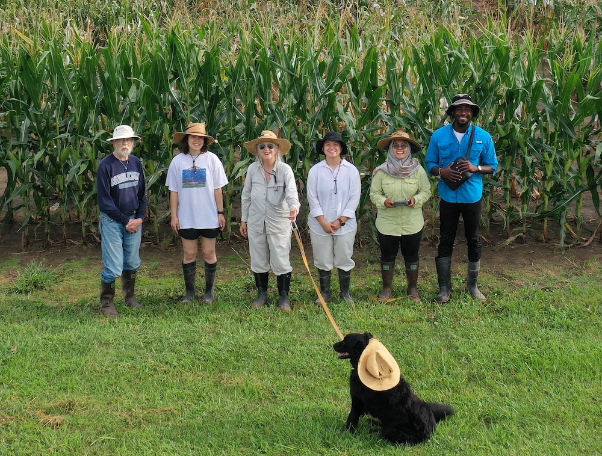

Missouri Maize Computation and Vision Laboratory
# 

Why Compute Maize?
We develop computational methods to understand how biological networks produce complex phenotypes. A phenotype is an observable characteristic of an organism. Some phenotypes, such as hair color or height, can be observed by eye; others, such as blood type, require laboratory analysis. A complex phenotype is formed by multiple genes interacting nonlinearly together and with the organism's environment and human management practices. A prime example is the climate resilience of crop plants. Deconvolving these interactions into better models is a fundamental challenge and requires both more accurate data over many individuals and better approaches to modeling.
We represent phenotypes as points in a high-dimensional space (mathematically, a manifold). Each dimension captures a portion of the physiological network that produces the phenotype and its underlying processes can be modelled mathematically. Our biological model is the disease lesion mimic mutants of maize, which produce tens to thousands of discrete lesions (spots) on leaf surfaces that vary in size, shape, morphology, developmental trajectory, and response to the environment that we quantitate by computer vision. Phenotypes that share combinations of similar dimensional values indicate related causal mechanisms in the biological network.
Formulating phenotypes as high-dimensional manifolds lets us ask several biological questions in a consistent way.
- Where are the known phenotypes on the manifold and which phenotypes are similar in which ways? The answers here would help characterize the empirical properties of the manifold, the ranges of posssible phenotypes, and which phenotypes share causal components in the biological network.
- Can one use the manifolds to predict the responses of genotypes to novel environments? The answers here could help geneticists breed for more challenging environments and farmers to respond more precisely to environmental stresses.
- Can one navigate the manifold more efficiently to produce novel phenotypes? The answers here could offer an alternative strategy for breeding better, more resilient crops.
Understanding complex phenotypes takes a lot of quantitative data! To scale up our field experiments for better sample size and more robust quantitation, we are developing many computer vision techniques for agriculture using our maize research crop. Flying is fast and nondestructive, so we can image tens of thousands of leaves in an afternoon, and repeatedly imaging lesions as they develop provides crucial kinetic data for models. We freely fly simple consumer-grade drones with visible light (RGB) cameras to capture video.
Our methods involve a mix of classical algorithms and deep learning, from mosaicking the videos to counting seedlings to building 3D models of plants to segmenting leaves and lesions from the imagery to manifold mapping. Below we highlight current and past work — for more details, follow the links!
Our Work
Our work cycles between the field for growing maize and the lab for computation.
Computation
Dewi Endah Kharismawati
Dewi is a very dedicated fifth-year Ph.D. student in Computer Science. Her research primarily focuses on digital phenotyping, leveraging consumer grade UAVsystems to make advanced agricultural technologies more accessible. She is an experienced UAV pilot with part 107 license and has over 200 hours of flying experience. Dewi has developed sophisticated algorithms for 3D reconstruction, image registration, object detection, and object segmentation. Her projects include:
- cornet v1: An unsupervised deep learning based homography estimator for a faster and improved mosaicking without metadata. CorNet is ten times faster than ASIFT while maintaining comparable accuracy. The current version is CorNetv3, trained on a more diverse and balanced dataset.
- MaiZaic: An improved and more robust end-to-end mosaicking pipeline that incorporates dynamic sampling with pixel optical flow, automatic lens and gimbal calibration, the enhanced Cornetv3, shot detection based on UAV movements, and mini-mosaicking to reduce error accumulation. MaiZaic achieves Average Percentage Error (APE) of 11% lower than ASIFT.
- Deep Maize Counter (DMC): an automated seedling maize stand counting pipeline using YOLOv9 for nursery field. DMC has two modes: (1) counting from mosaics that provides the whole view of the field or (2) counting from raw images utilizing homography matrices to stitch both detection and raw into mosaics. The mosaics mode achieved r2 of 0.616, while the raw frames mode achieved 0.906.
- Pointillist Maize: 3D maize reconstructions from 360° aerial videos using Structure from Motion (SfM), Neural Radiance Fields (NeRF), and Gaussian Splatting. Comparative analysis demonstrated that NeRF produces 90.4% of points and computes 7.3 times faster than SfM, while Gaussian Splatting produces 8.1% of points and operates 3.0 times faster than SfM.
- Maize Seedling Detection Dataset: A dataset containing aerial images of seedling maize across different growth stages, soil colors, and camera views. To ensure accurate counting, the dataset is categorized into three classes: one plant, two plants, and three plants. The two- and three-plant groups were intentionally planted together.
- Maize 3D Model Dataset: A dataset featuring aerial video orbital trajectories at various camera angles and views, including single plants, rows, and entire fields. Single plants were grown in a tiling field, with each plant spaced 15 feet apart to enable very low-altitude orbits. Evie and Chris are computing the 3D models of these plants.
Chimdi Walter Ndubuisi
Chimdi is a third year PhD student majoring in Electrical and Computer Engineering. His research focuses on computer vision and image processing. His work integrates deep learning, image processing, mathematical topology and computer vision to develop solutions and address challenges in plant phenotyping. Ultimately he works on mapping high-dimensional tensors of maize lesion phenotypes — biological attributes of leaf spots — onto manifolds that are only locally metric and using those maps to predict the structure of the underlying physiological network and faster routes for crop improvement. His projects include:
- Pre-Processing Pipeline and Color Correction Algorithm: Pre-processing pipeline and color correction algorithm for the ex situ imaging
- Wavelet Application and Snake Algorithm: Application of discrete and continuous wavelet transforms on color corrected 16-bit images with the application of a Navier-Stokes algorithm.
Our current phenotyping method relies on still images of single leaves from field-grown plants: an experienced team can image about 100 leaves/day. We previously developed a cascade of MATLAB algorithms to segment lesions from healthy tissue on leaves, and other code that quantitates lesion phenotypes. The cascade performs well on many phenotypes, but is less accurate on phenotypes that have many tiny lesions crowded together. We are now working on an improved pipeline to segment lesions from all the phenotypes. This more diverse collection of phenotypes will let us populate the manifold and recognize similar phenotypes, forming the model's blocks.
Our goal is to develop 3D models of maize plants, segment the leaves from each plant, and use each plant's leaves as input to our improved lesion segmentation pipeline.
Evie Wilbur and Christian Fluharty
We are looking to improve the efficiency of identifying lesions on maize plants from videos taken by drones by segmenting leaves. Segmenting leaves, or seperating the leaves out as individuals from a plant, can be achieved using modern computer vision advancements. By taking video from drones as input, we hope to output a result that clearly and accurately segments the leaves from the plant to be used as input to a model that will then segment the lesions on the leaves. Currently we are leveraging tools like Nautilus to automate extracting three-dimensional data in the form of point clouds, and using COLMAP for reconstruction. We wll then use these data to train and experiment with various computer vision models to optimize precise and accurate leaf segmentation.
Rushil Namjoshi
RamaNarayana Vemali
An important challenge is to track leaves as they develop, since new leaves appear at the top of the growing plant while older, juvenile leaves die at its bottom. Viewed from above, the angle a leaf subtends with the culm (the plant's 'stem') is determined very early in development and does not change. This provides a time-invariant signature for each leaf. My current work is developing algorithms to detect these angles as the crop grows.
Robotics
Alondra Conchas-Sanchez
My research focuses on the development of a robotic planter designed to improve the efficiency of planting genetically modified corn seed. Currently, the planting process is done by hand, requiring hours of labor in high temperatures, often exceeding 90° F. This not only makes the task physically demanding but also time-consuming. The robotic planter we are developing will streamline this process by automating the planting of all varieties of corn seeds used by our lab with the flexibility to accommodate future varieties. In addition to planting, the system will be capable of digging and closing holes, significantly reducing manual labor. A key future objective is to make the robotic planter fully autonomous, enabling it to handle large quantities of seed with minimal human intervention. To ensure optimal performance, ongoing experiments such as the angle of repose test are being conducted to determine how the angle of seed distribution impacts planting efficiency. We are also working to modify an existing planter designed by a previous capstone group, improving its maneuverability in field conditions to better suit our needs.
Carlos Vences
Nate Martin
I'm currently a sophomore studying mechanical engineering. My team and I are currently working on building and optimizing a rover that will open the furrow, plant the corn seed, and then close the furrow back up. Since collecting data is so important for AI, we must make sure to reduce variability and increase the rate at which we plant seeds. I hope to use my new found-knowdeldge and experiences from this project to further my career as a mechanical engineer.
Toni Kazic
Mostly, I'm the cruise director, but I do occasionally write some code.
- To keep track of all the data, seed, and tissues, I wrote and maintain Chloe, a crop management system and database in Prolog and Perl. It incorporates a number of practical, labor-saving techniques and computations I've found useful in planning, managing, and harvesting maize nurseries that also provide extensive phenotyping data. This was written up as a BioArXiv preprint.
- The prototype of our lesion segmentation code in MatLab was written mainly by Derek Kelly with a little help from Avimanyou Vatsa, published in Mach. Vision Appl.
- Ann E. Stapleton once asked me what was the minimal network that would produce her complex stress phenotypes. The resulting code produced the model in Chang et alia.
Thanks to Our Collaborators and Funders!
- Filiz Bunyak Ersoy
- Hadi AliAkbarpour
- Kannappan Palaniappan
- M. Gerald Neuffer
- U.S. National Science Foundation, Dept. of Electrical Engineering and Computer Science and the Graduate School of the University of Missouri, and an anonymous gift in support of maize research.
Selected Publications and Talks
- Kharismawati, D. E. and T. Kazic (2025). MaiZaic: a robust end-to-end pipeline to mosaic aerial RGB videos of maize field. BioRxiv preprint at https://www.biorxiv.org/content/10.1101/2024.12.31.630534v1.
- Ndubuisi, Chimdi Walter, Kharismawati, D. E., and T. Kazic (2023). Imaging maize lesions. Talk at MU Corteva plant science symposium, https://youtu.be/Tjg_716mRFg
- Conchas-Sanchez, A., Kharismawati, D. E., Ndubuisi, C. W. and T. Kazic (2024). Improvements and further tests on Colonel Corn.
- Conchas-Sanchez, A., Kharismawati, D. E., Ndubuisi, C. W. and T. Kazic (2024). Colonel Corn: Developing a Maize Seed Singulation For Use in a Robotic Planter.
- Kharismawati, D. E., Akbarpour, H. A., Aktar, R., Bunyak, F., Palaniappan, K., and Kazic, T. (2020). CorNet: unsupervised deep homography estimation for agricultural aerial imagery. In 16th European Conference on Computer Vision 2020 (ECCV2020), eds. V. Ferrari, B. Fisher, C. Schmid, and E. Trucco. 402–419. doi:10.1007/978-3-030-65414-6. This is the Youtube video presentation.
- Toni Kazic, 2020. Chloe: flexible, efficient data provenance and management, doi:10.1101/2020.01.28.923763
- Kelly, D., A. Vatsa, W. Mayham, and T. Kazic, 2016. Extracting complex phenotypes from images. Mach. Vision Appl., 27: 145–156, doi:10.1007/s00138-015-0718-6.
- Chang, M. M., Nail, D. A., Kazic, T. Simmons, S. J., and A. E. Stapleton, 2018. Loci that control nonlinear, interdependent responses to combinations of drought and nitrogen limitation. G3: Genes, Genomes, Genetics 8: 1481–1496, https://doi.org/10.1534/g3.118.200123
How to Find Us
We're at the Dept. of Electrical Engineering and Computer Science,
University of Missouri, Columbia. You can email Toni at kazict at
missouri dot edu, though she is often very slow to reply, especially during the
summer field season.